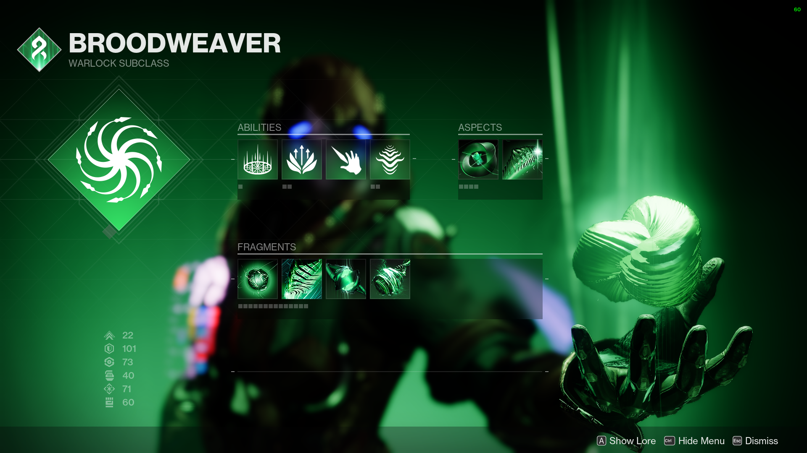
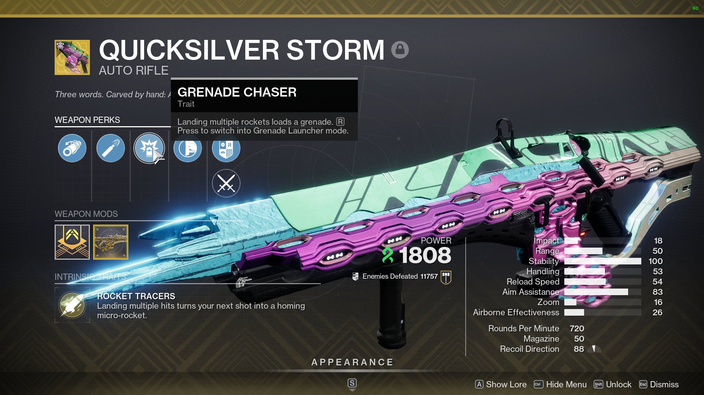
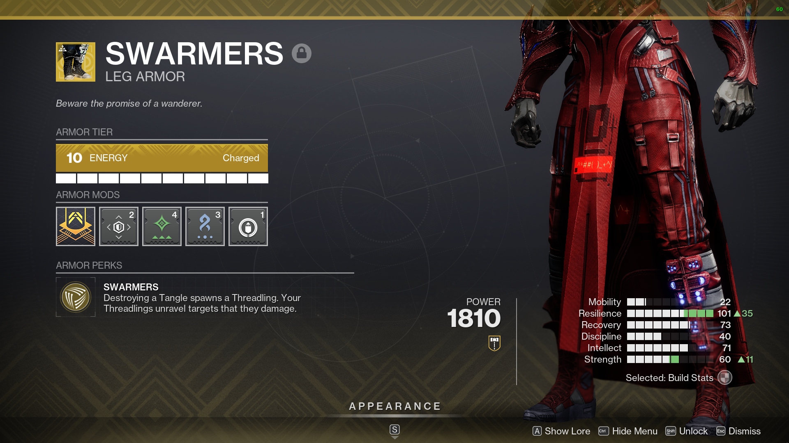

Destiny 2 Strand Warlock Build
*This code is dedicated to my current warlock build for the game Destiny 2*
Subclass: Broodweaver

Abilites:
- Super: Needlestorm
- Class Ability: Healing Rift
- Jump: Balanced Glide (Use whatever you prefer)
- Grenade: Threadling Grenade
- Melee: Arcane Needle
Aspects:
- The Wanderer
- Weaver's Call
Fragments:
- Thread of Generation
- Thread of Evolution
- Thread of Rebirth
- Thread of Isolation
Stat Preference:
- Resilience (Main stat)
- Intellect
- Recovery
- Discipline
- Toughness
- Mobility

Exotics
- Weapon: Quicksilver Storm

- Armor: Swarmers
